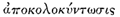
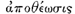
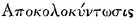

This piece is ascribed to Seneca by ancient tradition; it is impossible to prove that it is his, and impossible to prove that it is not. The matter will probably continue to be decided by every one according to his view of Seneca's character and abilities: in the matters of style and of sentiment much may be said on both sides. Dion Cassius (lx, 35) says that Seneca composed an  or Pumpkinification of Claudius after his death, the title being a parody of the usual; but this title is not given in the MSS. of the Ludus de Morte Claudii, nor is there anything in the piece which suits the title very well.
As a literary form, the piece belongs to the class called Satura Menippea, a satiric medley in prose and verse.
This text is that of Buecheler, with a few trifling changes, which are indicated in the notes. We have been courteously allowed by Messrs Weidmann to use this text. I have to acknowledge the help of Mr Ball's notes, from which I have taken a few references; but my translation was made many years ago.
W.H.D. ROUSE.
Editio Princeps: Lucii Annaei Senecae in morte Claudii Caesaris Ludus nuper repertus: Rome, 1513.
Latest critical text: Franz Buecheler, Weidmann, 1904 (a reprint with a few changes of the text from a larger work, Divi Claudii  in the Symbola Philologorum Bonnensium, fasc. i, 1864).
Translations and helps: The Satire of Seneca on the Apotheosis of Claudius, by A.P. Ball (with introduction, notes, and translations): New York: Columbia University Press; London, Macmillan, 1902.
I wish to place on record the proceedings in heaven October 13 last, of the new year which begins this auspicious age. It shall be done without malice or favour. This is the truth. Ask if you like how I know it? To begin with, I am not bound to please you with my answer. Who will compel me? I know the same day made me free, which was the last day for him who made the proverb true--One must be born either a Pharaoh or a fool. If I choose to answer, I will say whatever trips off my tongue. Who has ever made the historian produce witness to swear for him? But if an authority must be produced, ask of the man who saw Drusilla translated to heaven: the same man will aver he saw Claudius on the road, dot and carry one. Will he nill he, all that happens in heaven he needs must see. He is the custodian of the Appian Way; by that route, you know, both Tiberius and Augustus went up to the gods. Question him, he will tell you the tale when you are alone; before company he is dumb. You see he swore in the Senate that he beheld Drusilla mounting heavenwards, and all he got for his good news was that everybody gave him the lie: since when he solemnly swears he will never bear witness again to what he has seen, not even if he had seen a man murdered in open market. What he told me I report plain and clear, as I hope for his health and happiness.
I shall make myself better understood, if I say the month was October, the day was the thirteenth. What hour it was I cannot certainly tell; philosophers will agree more often than clocks; but it was between midday and one after noon. "Clumsy creature!" you say. "The poets are not content to describe sunrise and sunset, and now they even disturb the midday siesta. Will you thus neglect so good an hour?"
Claudius began to breathe his last, and could not make an end of the matter. Then Mercury, who had always been much pleased with his wit, drew aside one of the three Fates, and said: "Cruel beldame, why do you let the poor wretch be tormented? After all this torture cannot he have a rest? Four and sixty years it is now since he began to pant for breath. What grudge is this you bear against him and the whole empire? Do let the astrologers tell the truth for once; since he became emperor, they have never let a year pass, never a month, without laying him out for his burial. Yet it is no wonder if they are wrong, and no one knows his hour. Nobody ever believed he was really quite born[1]. Do what has to be done: Kill him, and let a better man rule in empty court."
Clotho replied: "Upon my word, I did wish to give him another hour or two, until he should make Roman citizens of the half dozen who are still outsiders. (He made up his mind, you know, to see the whole world in the toga, Greeks, Gauls, Spaniards, Britons, and all.) But since it is your pleasure to leave a few foreigners for seed, and since you command me, so be it." She opened her box and out came three spindles. One was for Augurinus, one for Baba, one for Claudius[2]. "These three," she says, "I will cause to die within one year and at no great distance apart, and I will not dismiss him unattended. Think of all the thousands of men he was wont to see following after him, thousands going before, thousands all crowding about him, and it would never do to leave him alone on a sudden. These boon companions will satisfy him for the nonce."
At once he bubbled up the ghost, and there was an end to that shadow of a life. He was listening to a troupe of comedians when he died, so you see I have reason to fear those gentry. The last words he was heard to speak in this world were these. When he had made a great noise with that end of him which talked easiest, he cried out, "Oh dear, oh dear! I think I have made a mess of myself." Whether he did or no, I cannot say, but certain it is he always did make a mess of everything.
What happened next on earth it is mere waste of time to tell, for you know it all well enough, and there is no fear of your ever forgetting the impression which that public rejoicing made on your memory. No one forgets his own happiness. What happened in heaven you shall hear: for proof please apply to my informant. Word comes to Jupiter that a stranger had arrived, a man well set up, pretty grey; he seemed to be threatening something, for he wagged his head ceaselessly; he dragged the right foot. They asked him what nation he was of; he answered something in a confused mumbling voice: his language they did not understand. He was no Greek and no Roman, nor of any known race. On this Jupiter bids Hercules go and find out what country he comes from; you see Hercules had travelled over the whole world, and might be expected to know all the nations in it. But Hercules, the first glimpse he got, was really much taken aback, although not all the monsters in the world could frighten him; when he saw this new kind of object, with its extraordinary gait, and the voice of no terrestrial beast, but such as you might hear in the leviathans of the deep, hoarse and inarticulate, he thought his thirteenth labour had come upon him. When he looked closer, the thing seemed to be a kind of man. Up he goes, then, and says what your Greek finds readiest to his tongue:
Claudius was delighted to find literary men up there, and began to hope there might be some corner for his own historical works. So he caps him with another Homeric verse, explaining that he was Caesar:
But the next verse was more true, and no less Homeric:
He would have taken in poor simple Hercules, but that Our Lady of Malaria was there, who left her temple and came alone with him: all the other gods he had left at Rome. Quoth she, "The fellow's tale is nothing but lies. I have lived with him all these years, and I tell you, he was born at Lyons. You behold a fellow-burgess of Marcus[3]. As I say, he was born at the sixteenth milestone from Vienne, a native Gaul. So of course he took Rome, as a good Gaul ought to do. I pledge you my word that in Lyons he was born, where Licinus [4] was king so many years. But you that have trudged over more roads than any muleteer that plies for hire, you must have come across the people of Lyons, and you must know that it is a far cry from Xanthus to the Rhone." At this point Claudius flared up, and expressed his wrath with as big a growl as he could manage. What he said nobody understood; as a matter of fact, he was ordering my lady of Fever to be taken away, and making that sign with his trembling hand (which was always steady enough for that, if for nothing else) by which he used to decapitate men. He had ordered her head to be chopped off. For all the notice the others took of him, they might have been his own freedmen.
Then Hercules said, "You just listen to me, and stop playing the fool. You have come to the place where the mice nibble iron[5]. Out with the truth, and look sharp, or I'll knock your quips and quiddities out of you." Then to make himself all the more awful, he strikes an attitude and proceeds in his most tragic vein:
These lines he delivered with much spirit and a bold front. All the same, he was not quite master of his wits, and had some fear of a blow from the fool. Claudius, seeing a mighty man before him, saw things looked serious and understood that here he had not quite the same pre-eminence as at Rome, where no one was his equal: the Gallic cock was worth most on his own dunghill. So this is what he was thought to say, as far as could be made out: "I did hope, Hercules, bravest of all the gods, that you would take my part with the rest, and if I should need a voucher, I meant to name you who know me so well. Do but call it to mind, how it was I used to sit in judgment before your temple whole days together during July and August. You know what miseries I endured there, in hearing the lawyers plead day and night. If you had fallen amongst these, you may think yourself very strong, but you would have found it worse than the sewers of Augeas: I drained out more filth than you did. But since I want..."
(Some pages have fallen out, in which Hercules must have been persuaded. The gods are now discussing what Hercules tells them).
"No wonder you have forced your way into the Senate House: no bars or bolts can hold against you. Only do say what species of god you want the fellow to be made. An Epicurean god he cannot be: for they have no troubles and cause none. A Stoic, then? How can he be globular, as Varro says, without a head or any other projection? There is in him something of the Stoic god, as I can see now: he has neither heart nor head. Upon my word, if he had asked this boon from Saturn, he would not have got it, though he kept up Saturn's feast all the year round, a truly Saturnalian prince. A likely thing he will get it from Jove, whom he condemned for incest as far as in him lay: for he killed his son-in-law Silanus, because Silanus had a sister, a most charming girl, called Venus by all the world, and he preferred to call her Juno. Why, says he, I want to know why, his own sister? Read your books, stupid: you may go half-way at Athens, the whole way at Alexandria. Because the mice lick meal at Rome, you say. Is this creature to mend our crooked ways? What goes on in his own closet he knows not; [6] and now he searches the regions of the sky, wants to be a god. Is it not enough that he has a temple in Britain, that savages worship him and pray to him as a god, so that they may find a fool[7] to have mercy upon them?"
At last it came into Jove's head, that while strangers were in the House it was not lawful to speak or debate. "My lords and gentlemen," said he, "I gave you leave to ask questions, and you have made a regular farmyard [8] of the place. Be so good as to keep the rules of the House. What will this person think of us, whoever he is?" So Claudius was led out, and the first to be asked his opinion was Father Janus: he had been made consul elect for the afternoon of the next first of July, [9] being as shrewd a man as you could find on a summer's day: for he could see, as they say, before and behind[10]. He made an eloquent harangue, because his life was passed in the forum, but too fast for the notary to take down. That is why I give no full report of it, for I don't want to change the words he used. He said a great deal of the majesty of the gods, and how the honour ought not to be given away to every Tom, Dick, or Harry. "Once," said he, "it was a great thing to become a god; now you have made it a farce. Therefore, that you may not think I am speaking against one person instead of the general custom, I propose that from this day forward the godhead be given to none of those who eat the fruits of the earth, or whom mother earth doth nourish. After this bill has been read a third time, whosoever is made, said, or portrayed to be god, I vote he be delivered over to the bogies, and at the next public show be flogged with a birch amongst the new gladiators." The next to be asked was Diespiter, son of Vica Pota, he also being consul elect, and a moneylender; by this trade he made a living, used to sell rights of citizenship in a small way. Hercules trips me up to him daintily, and tweaks him by the ear. So he uttered his opinion in these words: "Inasmuch as the blessed Claudius is akin to the blessed Augustus, and also to the blessed Augusta, his grandmother, whom he ordered to be made a goddess, and whereas he far surpasses all mortal men in wisdom, and seeing that it is for the public good that there be some one able to join Romulus in devouring boiled turnips, I propose that from this day forth blessed Claudius be a god, to enjoy that honour with all its appurtenances in as full a degree as any other before him, and that a note to that effect be added to Ovid's Metamorphoses." The meeting was divided, and it looked as though Claudius was to win the day. For Hercules saw his iron was in the fire, trotted here and trotted there, saying, "Don't deny me; I make a point of the matter. I'll do as much for you again, when you like; you roll my log, and I'll roll yours: one hand washes another."
Then arose the blessed Augustus, when his turn came, and spoke with much eloquence[11]. "I call you to witness, my lords and gentlemen," said he, "that since the day I was made a god I have never uttered one word. I always mind my own business. But now I can keep on the mask no longer, nor conceal the sorrow which shame makes all the greater. Is it for this I have made peace by land and sea? For this have I calmed intestine wars? For this, laid a firm foundation of law for Rome, adorned it with buildings, and all that--my lords, words fail me; there are none can rise to the height of my indignation. I must borrow that saying of the eloquent Messala Corvinus, I am ashamed of my authority[12]. This man, my lords, who looks as though he could not hurt a fly, used to chop off heads as easily as a dog sits down. But why should I speak of all those men, and such men? There is no time to lament for public disasters, when one has so many private sorrows to think of. I leave that, therefore, and say only this; for even if my sister knows no Greek, I do: The knee is nearer than the shin[13]. This man you see, who for so many years has been masquerading under my name, has done me the favour of murdering two Julias, great-granddaughters of mine, one by cold steel and one by starvation; and one great grandson, L. Silanus--see, Jupiter, whether he had a case against him (at least it is your own if you will be fair.) Come tell me, blessed Claudius, why of all those you killed, both men and women, without a hearing, why you did not hear their side of the case first, before putting them to death? Where do we find that custom? It is not done in heaven. Look at Jupiter: all these years he has been king, and never did more than once to break Vulcan's leg,
and once he fell in a rage with his wife and strung her up: did he do any killing? You killed Messalina, whose great-uncle I was no less than yours. 'I don't know,' did you say? Curse you! that is just it: not to know was worse than to kill. Caligula he went on persecuting even when he was dead. Caligula murdered his father-in-law, Claudius his son-in-law to boot. Caligula would not have Crassus' son called Great; Claudius gave him his name back, and took away his head. In one family he destroyed Crassus, Magnus, Scribonia, the Tristionias, Assario, noble though they were; Crassus indeed such a fool that he might have been emperor. Is this he you want now to make a god? Look at his body, born under the wrath of heaven! In fine, let him say the three words [14] quickly, and he may have me for a slave. God! who will worship this god, who will believe in him? While you make gods of such as he, no one will believe you to be gods. To be brief, my lords: if I have lived honourably among you, if I have never given plain speech to any, avenge my wrongs. This is my motion": then he read out his amendment, which he had committed to writing: "Inasmuch as the blessed Claudius murdered his father-in-law Appius Silanus, his two sons-in-law, Pompeius Magnus and L. Silanus, Crassus Frugi his daughter's father-in-law, as like him as two eggs in a basket, Scribonia his daughter's mother-in-law, his wife Messalina, and others too numerous to mention; I propose that strong measures be taken against him, that he be allowed no delay of process, that immediate sentence of banishment be passed on him, that he be deported from heaven within thirty days, and from Olympus within thirty hours."
This motion was passed without further debate. Not a moment was lost: Mercury screwed his neck and haled him to the lower regions, to that bourne "from which they say no traveller returns." [15] As they passed downwards along the Sacred Way, Mercury asked what was that great concourse of men? could it be Claudius' funeral? It was certainly a most gorgeous spectacle, got up regardless of expense, clear it was that a god was being borne to the grave: tootling of flutes, roaring of horns, an immense brass band of all sorts, such a din that even Claudius could hear it. Joy and rejoicing on every side, the Roman people walking about like free men. Agatho and a few pettifoggers were weeping for grief, and for once in a way they meant it. The Barristers were crawling out of their dark corners, pale and thin, with hardly a breath in their bodies, as though just coming to life again. One of them when he saw the pettifoggers putting their heads together, and lamenting their sad lot, up comes he and says: "Did not I tell you the Saturnalia could not last for ever?"
When Claudius saw his own funeral train, he understood that he was dead. For they were chanting his dirge in anapaests, with much mopping and mouthing:
Claudius was charmed to hear his own praises sung, and would have stayed longer to see the show. But the Talthybius [16] of the gods laid a hand on him, and led him across the Campus Martius, first wrapping his head up close that no one might know him, until betwixt Tiber and the Subway he went down to the lower regions. [17] His freedman Narcissus had gone down before him by a short cut, ready to welcome his master. Out he comes to meet him, smooth and shining (he had just left the bath), and says he: "What make the gods among mortals?" "Look alive," says Mercury, "go and tell them we are coming." Away he flew, quicker than tongue can tell. It is easy going by that road, all down hill. So although he had a touch of the gout, in a trice they were come to Dis's door. There lay Cerberus, or, as Horace puts it, the hundred-headed monster. Claudius was a trifle perturbed (it was a little white bitch he used to keep for a pet) when he spied this black shag-haired hound, not at all the kind of thing you could wish to meet in the dark. In a loud voice he cried, "Claudius is coming!" All marched before him singing, "The lost is found, O let us rejoice together!" [18] Here were found C. Silius consul elect, Juncus the ex-praetor, Sextus Traulus, M. Helvius, Trogus, Cotta, Vettius Valens, Fabius, Roman Knights whom Narcissus had ordered for execution. In the midst of this chanting company was Mnester the mime, whom Claudius for honour's sake had made shorter by a head. The news was soon blown about that Claudius had come: to Messalina they throng: first his freedmen, Polybius, Myron, Harpocras, Amphaeus, Pheronactus, all sent before him by Claudius that he might not be unattended anywhere; next two prefects, Justus Catonius and Rufrius Pollio; then his friends, Saturninus, Lusius and Pedo Pompeius and Lupus and Celer Asinius, these of consular rank; last came his brother's daughter, his sister's daughter, sons-in-law, fathers and mothers-in-law, the whole family in fact. In a body they came to meet Claudius; and when Claudius saw them, he exclaimed, "Friends everywhere, on my word! How came you all here?" To this Pedo Pompeius answered, "What, cruel man? How came we here? Who but you sent us, you, the murderer of all the friends that ever you had? To court with you! I'll show you where their lordships sit."
Pedo brings him before the judgement seat of Aeacus, who was holding court under the Lex Cornelia to try cases of murder and assassination. Pedo requests the judge to take the prisoner's name, and produces a summons with this charge: Senators killed, 35; Roman Knights, 221; others as the sands of the sea-shore for multitude. Claudius finds no counsel. At length out steps P. Petronius, an old chum of his, a finished scholar in the Claudian tongue and claims a remand. Not granted. Pedo Pompeius prosecutes with loud outcry. The counsel for the defence tries to reply; but Aeacus, who is the soul of justice, will not have it. Aeacus hears the case against Claudius, refuses to hear the other side and passes sentence against him, quoting the line:
A great silence fell. Not a soul but was stupefied at this new way of managing matters; they had never known anything like it before. It was no new thing to Claudius, yet he thought it unfair. There was a long discussion as to the punishment he ought to endure. Some said that Sisyphus had done his job of porterage long enough; Tantalus would be dying of thirst, if he were not relieved; the drag must be put at last on wretched Ixion's wheel. But it was determined not to let off any of the old stagers, lest Claudius should dare to hope for any such relief. It was agreed that some new punishment must be devised: they must devise some new task, something senseless, to suggest some craving without result. Then Aeacus decreed he should rattle dice for ever in a box with no bottom. At once the poor wretch began his fruitless task of hunting for the dice, which for ever slipped from his fingers.
All on a sudden who should turn up but Caligula, and claims the man for a slave: brings witnesses, who said they had seen him being flogged, caned, fisticuffed by him. He is handed over to Caligula, and Caligula makes him a present to Aeacus. Aeacus delivers him to his freedman Menander, to be his law-clerk.